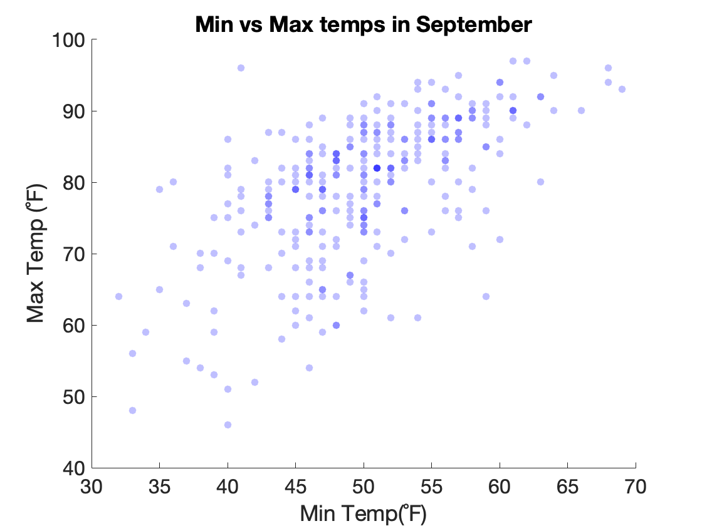
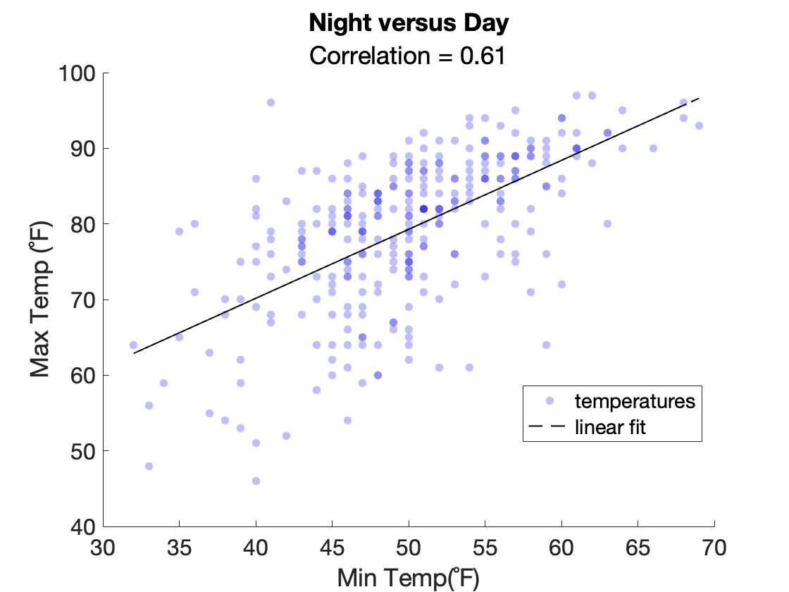

Advanced Plotting: Overlays and Tiling
One plot is great. Multiple plots is even greater
Often, you want to have have multiple plots added to the same axes or you want multiple axes added to the same figure. In this module, we'll talk about how to do this.
Functions you Should know
hold- Retain current plot when adding new plotsnexttile: add tiled axes to a figuretiledlayout: set the layout of the tiled axes in a tiled figurebar: create a bar plotscatter: create a scatter plothistogram: create a histogramboxchart: create a box plottitle: add a title to the axesxlimand ylim: set the x and y limitsxlabeland ylabel: label the x and y axeslegend: add legend to axes
The power of hold
In MATLAB, plotting is destructive, by default . This means that calls to new plotting functions will overwrite any previous plots in the current axes. So, for example, if you execute the following
you would be left with only the plot of ythe plot of x will be wiped out of existence.
If, instead, you want to add multiple plots to the same axes, which is a thing people totally do, you need to call the function hold.
Calling hold is very easy. You just enter following:
If you want to go back to destruction, and stop overlaying graphs, enter the following:
and the hold will be turned off.
Ok, let's overlay some plots!
Mix and Match
The nice thing about hold is that you can overlay different plotting functions.
Load Weather Data
For this example, we will load the same weather data from 2013 that we used in the previous module (Plotting Basics).
| Load Weather Data | |
|---|---|
Recall that this table contains historical weather information from Denver in September, 2013. We can plot the maximum temperatures as a box plot using the following syntax, as we did in the previous module
| Bar Plot of Weather Data | |
|---|---|

We can then easily overlay the minimum temperatures as a box plot by adding the following lines of code:
hold on % turn overlay on
y = T.MinTemperatureF; % grab the minimum temps and set to y
hb = bar(x,y,FaceAlpha=0.75); % bar plot minimum temps
Since we are overlaying the second bar plot atop the bar plot already plotted, we don't have to relabel the y-axis and add the title. They are already there.
Finally, we can add a trend line of the mean temperatures using the plot function
y = T.MeanTemperatureF;
plot(x,y,'k--',LineWidth=2) % plot dashed line
legend("Max","Mean","Mean",fontsize=10) % add legend

Here we don't have to turn
holdon. It stays on once set. We make the line black and dashed using the format specification'k--'at the 3rd input. We add the legend using thelegendfunction and manually input the names for the legend.
And we finish with an information dense plot of maximum, minimum and mean temperatures in Denver, CO in the fall of 2013.
Overlaying Histograms
Load even More Data
For the next few examples, we will load ten years worth of Denver weather data. I have stored this data in a .CSV file (spreadsheet) in a remote file on an Amazon Server. To load this file, run the following in MATLAB
| Import Table | |
|---|---|
This should load a 300X23 table into the table variable, T. Remember, each row in this table represents one day's worth of weather data. So, 300 rows would be 10 years of September data. Each column is a variable (or measurement), like Max or Min Temperature (for the day).
Plotting the Histogram
As we saw in the previous module, histograms are used to display the distributions of frequency. For example, here is a histogram of the Minimum Temperatures in September over 10 years:
| Histogram of Minimum Temperatures | |
|---|---|
As we can see, a lot of low temps from 45-55C, and less low temps at 35C or 70C.
For comparison, let's add the maximum temperatures.
| Overlay Maximum Temperatures | |
|---|---|

And now we have overlaid the maximum temperatures over 10 years.
As you review the plot, notice that:
- MATLAB automatically rescaled the axis to fit the maximum data and changed the color of the overlaid histogram.
- We did not call the
figurefunction again ortitle,ylabel, orxlabel. The figure, title, x-, and y-labels all stayed the same. - We used the function
legendto add a color legend to the plot. - We used the same number of bins (30) in both histogram calls. This is important to ensure the plotted distributions look similar.
Histogram challenge
How would you add the distribution of mean temperatures ('MeanTempF') to the axes above?
You can do this with one line of code:
- Notice that we didn't need to call
hold onagain. Once it's on, it's on. - Also notice the third input into the function
DisplayName = "mean". This input is used to update the legend with an informative name (otherwise you would get something uninformative, likedata3).

Swarm + Box Chart
Box plots visually summarize the statistics of a given dataset (median, range, and interquartile range), while Swarm Charts plot ALL the data points, typically in a shape that infers the summary statistics. Combining both charts is a great way to synergize the plots' respective advantages.
We can do so using the following syntax:
Now we can really get a sense of the distribution of the data across ten years.
The course function mmBoxSwarm simplifies creating these plots. The following syntax recreates the figure above.
hc = mmBoxSwarm(x,y,...
XJitterWidth=0.5,...
MarkerFaceColor='k',...
MarkerFaceAlpha=0.1,...
Notch='on')
So, with just one function call, you easily overlay box plots and swarm charts.
Overlaying Scatter Plots
Recall that a scatter plot allows you to visualize the relationship between two variables.
For example, the following shows the relationship between maximum and minimum temperatures on a given day in September over 10 years:
| Scatter Plot of Min vs Max temps | |
|---|---|

Note, since we turned on the transparency of the dots, we get different shaded dots. The darker shaded blue dots indicate that there is more than one dot at that location.
The rising trend of the scatter plot suggests the temperatures are correlated. But are they correlated?
Overlaying a Regression Line
The term correlation in statistics indicates an association between two variables. We can calculate the correlation between the two variables using the function corr, as follows:
| Correlation between Min and Max Temps | |
|---|---|
And we get a correlation of 0.61. Since the value is positive, then our data is positively correlated. Since the value is greater than 0.5 but less than 0.7, our data can be considered "mildly correlated".
As our data is mildly correlated, we can calculate the linear regression of the data. Linear regression is a mathematical model that we can use to predict one variable from the other. For example, we could use the linear regression to predict what the maximum temperature would be given a minimum temperature. It might not be a great prediction (since the data is only mildly correlated), but its a start. And once we calculate the linear regression we can plot a visualization of the model as a line overlaid on the scatter plot.
We calculate the linear regression and then plot it, as follows:

To add the regression line, we used the plot function. We had to turn hold on to make sure the plot function didn't overwrite the scatter plot.
Notice that the regression line goes through the middle of the cloud and trends upwards. Dots that are closest to the line are best predicted by the model. Dots further away from the line are less well predicted. Warmer temperatures seem to be better predicted than cooler temperatures.
Overlaying Multiple Scatter Plots
We can of course overlay multiple scatter plots. Here we'll add the Minimum Temperatures vs Mean Temperatures to our previous scatter plot. We'll also change the color of the second scatter plot so we can differentiate the two
x = T.MinTemperatureF;
y = T.MaxTemperatureF;
hs = scatter(x, y,[],'blue','filled',MarkerFaceAlpha=0.25); % default size, blue, filled, transparency of 0.25
xlabel('Min Temp(F)')
ylabel('Max Temp (F)')
hold on % turn hold on
y = T.MeanTemperatureF; % set y to mean temps
scatter(x,y,[],'green','filled',MarkerFaceAlpha=0.25) % plot the min vs mean values
ylabel('Temp (F)') % relabel the y-axis to just 'Temp'
legend('Max','Mean',location="best") % add a legend to the axes
title('Temp Correlation - September') % update title
Again, between the scatter function calles, we turn hold on.

Now we have a new scatter plot (green) overlaid atop the previous scatter plot (blue). The new scatter plot represents the mean temps. These values have a similar relationship to the minimum temps as the maximum temperatures (mildly correlated).
Tiled Layouts
Sometimes, you want to add several different axes to the same figure. The functions nexttile and subplot can do this for you.
To add plots, we simply enter the commands after each nexttile call.
Here we add the plots from above into three different tiles in the same figure

Here, after each
nexttilefunction call, we simply insert the code from the previous examples above.nexttileautomatically manages placing the tiles in the figure.
tiledlayout
By default, nexttile plot tiles in an ever expanding grid of tiles, the organization of which depends on the dimensions of the figure. This is known as the "flow" layout. If you want more control of the organization of the tiles, you use the function tiledlayout, as follows:
| Horizontal Tiled Layout | |
|---|---|

Notice that we add a function call to
tiledlayoutright afterfigure. And we only calltilelayoutonce. The rest of the code is the same, but now our tiles are organized horizontally.
If you want a vertical organization, then you would input 'vertical' into tilelayout. If you want to explicitly set the number of rows and columns, you would input the rows and columns, as follows:
subplot
subplot is the older, more fussy function used to divide a figure up into tiles. When you use subplot, you have to decide beforehand how many tiles you want and in what configuration. You should use nexttile unless you absolutely have to use subplot.
A function call to subplot looks like the following
This adds one tile at the first position in a 1X3 layout
To recreate the above plot using subplot, we would use the following code:
notice for each call to subplot, the first two inputs (1,3) are the same. These set the number of tiles and layout: 1 row, 3 columns. Only the third input changes. This sets the position, indicating where to create the tile (first, second, or third position, in this case).
A note on position in subplot
Unlike index, position in subplot runs from left to right (row major). So, if you had a 3X3 layout of tiles, the first three position would be the top of tiles.
subplot Challenge
Consider the following call to subplot
What would be the tile layout? Where would the tile be created (row, col)?
This function call to subplot(2,3,3) would create a layout of 2 rows and 3 columns. The tile would be created in the second row, first column.